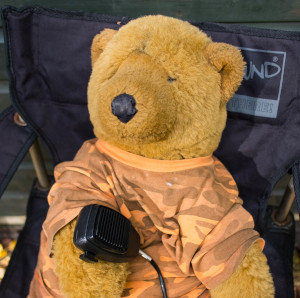
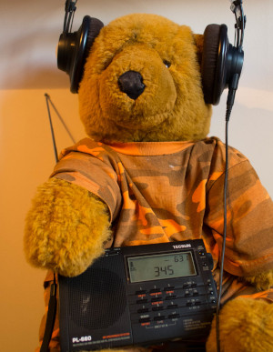
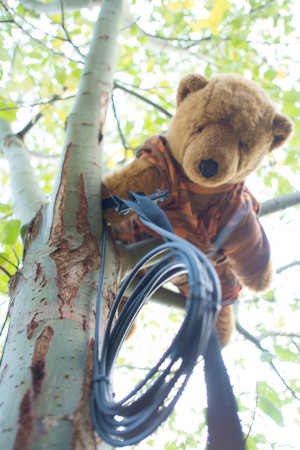

Does it matter if amateur radio dies out?
 This might seem an odd question to somebody who thinks that
amateur radio has already died out -- that it's gone the way
of Etch-a-Sketch, cigarette cards, and lava lamps. It might
seem ever odder to a person who's never even heard of
amateur radio -- and there many people who have not.
In fact, amateur radio retains a stalwart -- but ageing -- following, and new
digital methods of radio communication
have attracted some younger enthusiasts.
This might seem an odd question to somebody who thinks that
amateur radio has already died out -- that it's gone the way
of Etch-a-Sketch, cigarette cards, and lava lamps. It might
seem ever odder to a person who's never even heard of
amateur radio -- and there many people who have not.
In fact, amateur radio retains a stalwart -- but ageing -- following, and new
digital methods of radio communication
have attracted some younger enthusiasts.
For the record, amateur radio is the practice of using simple, ideally home-made radio equipment, to carry out short conversations with other enthusiasts who may be geographically distant. These conversations may be voice or data or still even -- amazingly -- Morse code. In most countries certain radio wavebands are set aside for amateur use, and to transmit on them you need a licence, which is often issued on passing an exam.
Although the fact of amateur radio's decline is incontestable, the reasons are endlessly debated. The most superficially credible explanation is that so many superior communication technologies are available. However, amateur radio was rarely a practical, robust method of communication, and wasn't expected to be.
Another possible explanation is the degradation in operating conditions. There are natural and man-made causes for this. Among the natural causes are the cyclic variation in sunspot activity, which causes changes in the composition of the ionosphere. Peaks in sunspot activity have been getting progressively smaller since the 1960s, and current predictions are that this trend will continue. In fact, had sunspot activity been as unfavourable as it is now, when Marconi attempted his first transatlantic transmissions in 1901, radio might never have taken off at all.
Man-made causes of degraded operating conditions include the electrical interference with which we now fill our world -- power-line networking equipment is a particular bugbear of the radio enthusiast.
Another justification that is frequently offered is that amateur radio is unfashionable or unexciting -- and it isn't just young people saying this. Maybe this is true but, if it is, it's hardly a new perception. When Galton and Simpson wrote The Radio Ham for television back in 1961, amateur radio enthusiasts were already seen as figures of fun -- stuffy, social misfits, tapping out Morse code in dark attic rooms. Despite this attitude, interest in amateur radio was then at an all-time peak: operating conditions were favourable, there were no competing low-cost methods of long-distance communication, and the world had not yet succumbed to RF interference. A poor public image did not discourage enthusiasts. Still, there is a culture surrounding amateur radio that many find unappealing. Peculiar features of this culture include referring to people by their call-signs rather than their names, and using a bunch of abbreviations from the days of Morse code. The exam-preparation booklet Foundation Licence Now, endorsed by the Radio Society of Great Britain (and now mercifully out of print) contained a bunch of patronizing cartoons, in which every single character, with no exceptions, was male. While every amateur radio enthusiast I know is a decent fellow, it's a sad fact that he's, well, a fellow. If there's any interest in the subject among the other half of the human race, it's scarcely acknowledged.
Whatever the explanation, amateur radio is dying. It's even dying in Japan, which historically had the greatest proportion of licensed operators in the world. Since the mid-90s, the number of operators in Japan has fallen by about 50%.
Should we be concerned by any of this? Most of us aren't overly concerned by the decline in enthusiasm for skateboarding or Trivial Pursuit parties. Why should amateur radio be any different? In fact, leaving aside the (quite legitimate) concerns of its enthusiasts, the continued importance of amateur radio comes down to three questions:
-
Does it matter if we lose a practical means of communication?
-
It there any widespread benefit if the part of the RF spectrum currently allocated to amateur radio is re-used for something else?
-
Does it matter if the technical skills inherent in amateur radio are lost from society?
A practical means of communication?
On the one hand, the life-saving role played by amateur radio operators in a number of disaster situations cannot be denied. As a means of emergency communication, the value proposition of amateur radio is that it is not dependent on infrastructure, or even on mains power. A single car battery will run a transceiver at decent power levels for some hours. Amateur radio operators are, on the whole, pretty skilled at working around difficult operating conditions. Unfortunately, mainstream technologies like cellular phones and Internet services are dependent on an extensive, fragile infrastructure, that can often fail in floods or strong winds. In the UK, and probably elsewhere, an amateur radio licence carries with it the obligation to make oneself available for emergency communications if requested.
On the other hand, it's hard to determine with any confidence exactly how often amateur radio plays a crucial role in disaster relief. That it sometimes does, cannot be denied. But how often? It's hard to get reliable information.
The problem with the 'no infrastructure' proposition is that it isn't really true. It's undeniable that an amateur radio operator using a simple HF (typically about 7-20 MHz) transceiver in Little Crumbling, England can sometimes talk to another in Dogpatch, Iowa using only simple, home-made equipment. But these enthusiasts may not be able to talk to others in the next town, because of the vagaries of HF wave propagation. To get robust, reliable point-to-point communication, you need a network of repeaters, and this amounts to infrastructure, of a sort. These repeaters are going to be subject to the same catastrophes that knock out mainstream communications systems.
There's also a suspicion -- at least in the UK -- that sometimes radio volunteers can actually interfere with emergency response, rather than assisting. That's not because of any lack of technical skill, but a result of inadequate understanding of the way that mainstream services are coordinated. Even the various professional emergency services don't always work well together.
Nevertheless, in the UK and, I suspect elsewhere, there is a long-standing tradition of unpaid volunteers doing life-saving work that many would argue should be the province of governmental agencies. We have volunteer firefighters, volunteer ambulance drivers, volunteer first-aiders, volunteer lifeboat crews, and so on. While these life-saving services could be centrally funded and managed, the reality is that often they are not -- volunteers do a crucial, and often dangerous, job, as well as professionals. An amateur radio emergency service doesn't cost the taxpayer anything, and might just safe lives.
A waste of spectrum?
The electromagnetic spectrum is a crowded place these days. Amateur radio occupies a tiny sliver of each of the regular bands, often shared with other users. The amateur part of the spectrum is always under threat from commercial and military users and, the less activity there is in amateur radio, the more pressing that threat becomes.
Are there better uses for the electromagnetic spectrum than amateur radio? The part of the spectrum that is most contested, I think, is that part which is most used for low-power, line-of-sight communication. The VHF 2m (~140 MHz) band is widely used in aviation and marine communication, as well as by amateur radio operators. Amateur radio could see itself muscled out of this band without a strong presence and vocal representation. At the same time, the lower-frequency bands are becoming increasingly unusable because of interference.
Potentially the solution here is to make better use of the limited spectrum -- both by amateur radio operators and everybody else. Most VHF communication is still analogue, and hugely inefficient in its use of bandwidth. Analogue voice communication amounts to the transmission of silence a lot of the time. Amateur radio has already risen to this challenge, to some extent, with digital modes of operation multiplexing large numbers of conversations into tiny frequency ranges. The technology for doing this is very interesting and could well have wider application.
In the end, squeezing amateur radio out of the spectrum would be like taking away the bicycle lane on a highway -- bad for cyclists, with very little benefit for anybody else. It would be a very short-term, limited solution to a problem that needs a global, coordinated response. But where have we heard that before?
Deskilling and disempowering?
One of the founding justifications for a waveband allocation for amateur radio was that it would provide a means for the development of technical skills in the general community. It was thought to be beneficial to society as a whole if the average level of technical knowledge was raised. If amateur radio dies, will society lose a pool of skilled technical experts? That's a difficult question to answer.
There's no doubt that amateur radio operation can, in some scenarios, require a high level of technical skill. Some enthusiasts do still build, and sometimes design, their own equipment. Many will build their own antennas and ancillary equipment. To operate the HF bands successfully, you need to know about the physics of the ionosphere and the way it affects RF wave propagation -- or, at least, know how to find somebody who does.
However, a lot of this skill and knowledge, it seems to me, falls into the 'arcane' category. Certainly we need a society where everybody knows what an amp is, and perhaps even how a transistor works. But how great a loss would it be if nobody knew how to wind a balun or calibrate a VFO (don't even ask)?
I tend to have a somewhat alarmist view of these things. It concerns me greatly, for example, that today's computer science graduates don't know how a logic gate works. You're never going to need that knowledge to write a web page or even code a transaction processing system; but the next wave of technological advance will come, if it comes at all, from people who understand fundamentals. I don't think everybody needs to know this stuff, but there needs to be a general respect for people who do. We really don't want to get into a situation where it is regarded as aberrant to take an interest in the deep complexities of technology.
For all that, I'm far from convinced that most amateur radio enthusiasts have a deep interest in technology. If you look in the advertising pages of amateur radio publications, you'll see a lot of advertisements for transceivers costing thousands of pounds, and very little for components, tools, or test equipment. It increasingly looks as if amateur radio is a way for wealthy, middle-aged folks to dispose of their surplus income. I not at all sure that there are enough amateur radio enthusiasts with a technological interest, to make a significant difference to the average level of knowledge in society.
Summary
So does it matter if amateur radio dies out? It matters to established enthusiasts, many of whom expected to be the respected 'elmers' (mentors) of the next generation of operators. These folks have found to their chagrin that, in fact, there is no next generation.
I remain optimistic that young people with an interest in technology will find an outlet for it. It probably won't be in radio -- not, at least, in amateur radio as we currently understand it. It might be tinkering with MicroBits or hacking up video games or something that hasn't been invented yet. I've never been convinced that a person with no overt interest in engineering could be enticed into becoming an amateur radio operator, by the prospect of carrying on a stuttering conversation about antenna sizes with a complete stranger in another country, anyway.
I've also never been convinced that the existence of amateur radio has made an interest in technology seem less geeky and inaccessible. If it was was perceived as a nerdy back in Tony Hancock's day, how much more must it seem so now? Without knowing the first thing about physics or engineering, anybody can communicate around the world, as casually as shouting across the room.
It seems to me that the main interest in amateur radio these days is among 'prepper' types -- people who are planning for the end of civilization. I can see how a means of wide-area communication that is not dependent on an established infrastructure could be of use in such a scenario. I don't know how much comfort it will be, having an intermittent, noisy conversation with somebody in, say, Latvia, when we're huddled around a smoky campfire, gnawing on the bones of our pets.
While I accept that the end of civilization is a notional possibility -- and Covid has certainly increased its probability -- I don't see how planning for it constitutes a good reason to maintain interest in amateur radio, if its time has passed. It seems to me that, if there is a good reason to keep amateur radio alive, it is because of its potential for emergency communications. While that potential certainly exists, I'm far from certain that it is exercised very often, or even that effectively.
If we need a technical pastime that will appeal to young people -- and I'm not sure they won't find one on their own -- it needs to be something makes some kind of sense in the modern world.